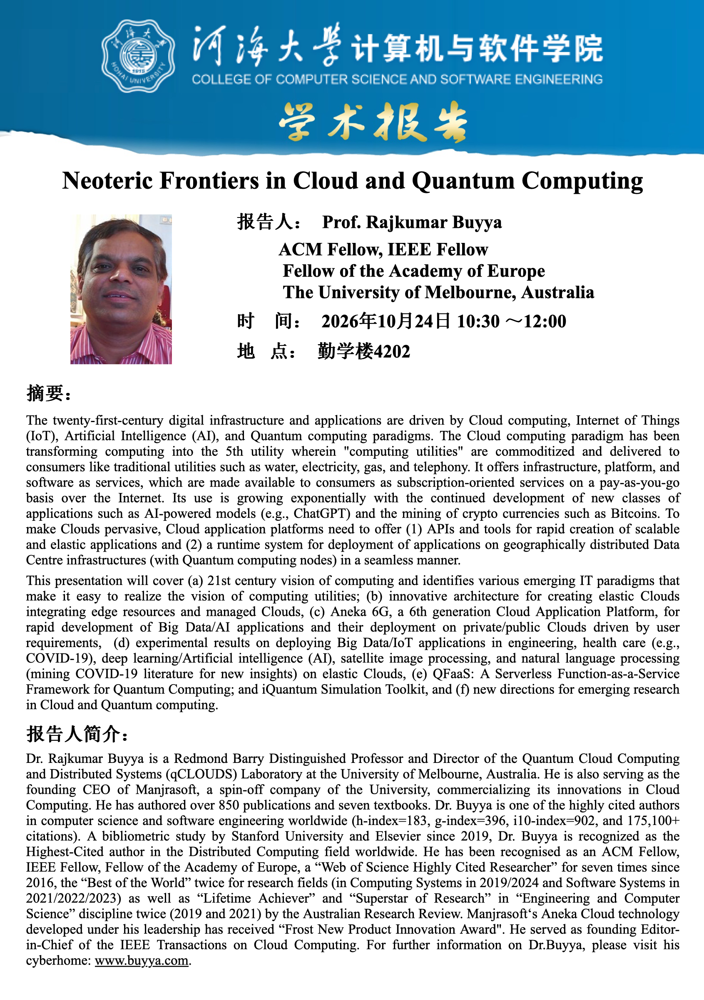
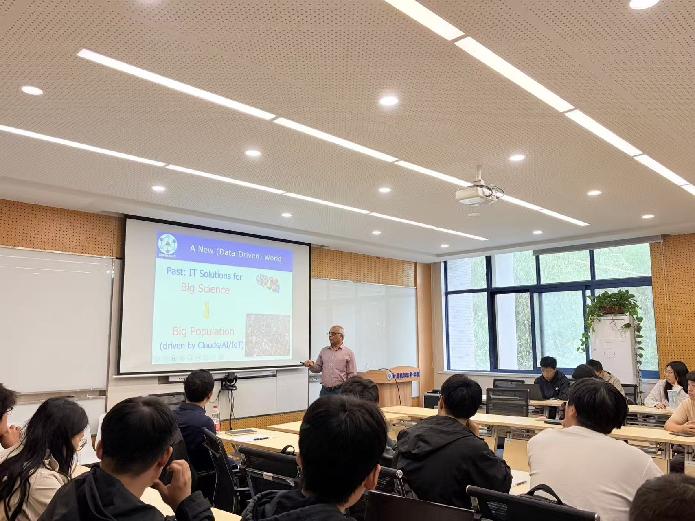
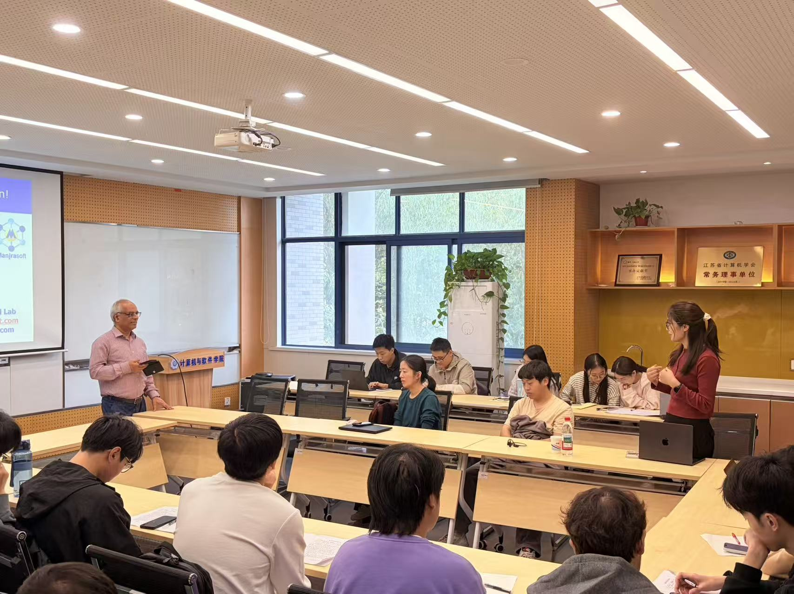

Neoteric Frontiers in Cloud and Quantum Computing
报告摘要
云计算、物联网、人工智能和量子计算正在共同推动数字基础设施与应用的发展。云计算以按需付费的方式提供基础设施、平台和软件服务，将计算资源转化为可按需获取的公共服务。面向新一代应用，云平台需要支持可扩展、弹性应用的快速开发，并在包含量子计算节点的分布式数据中心之间实现应用部署。
本报告介绍融合边缘资源与托管云的弹性云架构，以及第六代云应用平台 Aneka 6G，讨论大数据与人工智能应用在私有云和公有云中的开发、部署及实验结果。报告还介绍面向量子计算的无服务器函数即服务框架 QFaaS、iQuantum 仿真工具，并探讨云计算与量子计算的未来研究方向。
报告人简介
Rajkumar Buyya 是澳大利亚墨尔本大学 Redmond Barry 杰出教授、量子云计算与分布式系统（qCLOUDS）实验室主任，ACM Fellow、IEEE Fellow、欧洲科学院院士。他是 Manjrasoft 公司的创始首席执行官，曾任 IEEE Transactions on Cloud Computing 创刊主编，长期从事云计算、分布式系统及量子计算相关研究。
报告摘要与报告人简介据本次活动海报整理。
报告海报


现场照片



